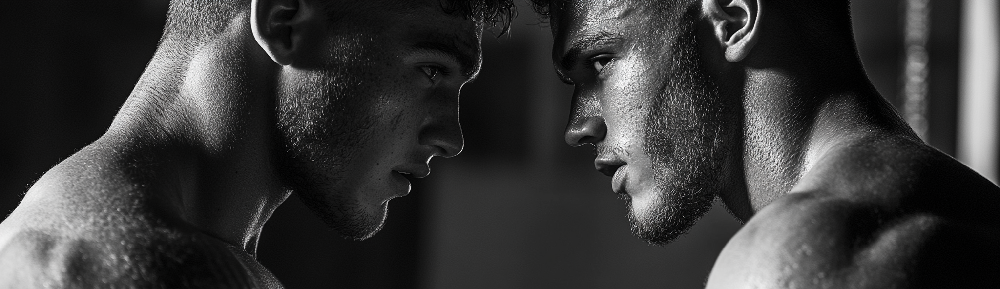

Lanzamiento de Peso
Lanzamiento de Peso: Orígenes y Actualidad
Orígenes del Lanzamiento de Peso
El lanzamiento de peso es una disciplina del atletismo en la que los atletas intentan lanzar una bola pesada lo
más lejos posible. Esta prueba tiene sus raíces en la antigüedad, pero ha evolucionado signi cativamente
hasta convertirse en la competición moderna que conocemos hoy.
Antigüedad
Civilizaciones Antiguas: Las prácticas de lanzar objetos pesados se remontan a las civilizaciones antiguas,
donde se utilizaban para demostrar fuerza y habilidades militares. En la Grecia antigua, por ejemplo, se
lanzaban piedras en competiciones informales.
Juegos Escoceses de las Tierras Altas: En Escocia, durante los Juegos de las Tierras Altas (Highland Games), se
realizaban lanzamientos de piedras, una práctica que puede considerarse un precursor del lanzamiento de
peso moderno.
Consolidación Moderna
El lanzamiento de peso tal como lo conocemos comenzó a tomar forma en el siglo XIX.
Competencias Universitarias y Clubes de Atletismo: En el siglo XIX, las universidades y los clubes de atletismo
en Europa y América del Norte empezaron a incluir el lanzamiento de peso en sus competencias.
Juegos Olímpicos de 1896: El lanzamiento de peso fue incluido en los primeros Juegos Olímpicos modernos
celebrados en Atenas en 1896, consolidándose como una de las pruebas o ciales del atletismo.
Desarrollo y Evolución
Desde sus inicios, el lanzamiento de peso ha experimentado varias modi caciones en cuanto a reglas, técnica
y equipamiento.
Reglas y Técnicas
Reglas Básicas: El lanzamiento de peso se realiza desde un círculo de lanzamiento con un diámetro de 2,135
metros (7 pies). El objetivo es lanzar la bola de metal (peso) lo más lejos posible, sin salir del círculo antes de
que el peso aterrice.
Técnicas de Lanzamiento: Dos técnicas principales han dominado el deporte:
Técnica Lineal (O'Brien): Introducida por Parry O'Brien en la década de 1950, esta técnica implica girar 180
grados dentro del círculo antes de lanzar.
Técnica de Rotación: Esta técnica, similar a la utilizada en el lanzamiento de disco, implica una rotación completa de 360 grados dentro del círculo y ha ganado popularidad en las últimas décadas.
Equipamiento
Peso: El peso es una bola de metal. Para hombres, pesa 7,26 kg (16 libras), y para mujeres, 4 kg (8,82 libras).
Círculo de Lanzamiento y Área de Caída: El círculo de lanzamiento está construido con materiales antideslizantes, y el área de caída está delimitada con ángulos especí cos para validar los lanzamientos.
Actualidad del Lanzamiento de Peso
El lanzamiento de peso sigue siendo una prueba central en el atletismo moderno, con una presencia signi -
cativa en competiciones internacionales.
Competiciones Internacionales
Juegos Olímpicos: El lanzamiento de peso es una prueba destacada en los Juegos Olímpicos, tanto para
hombres como para mujeres.
Campeonatos Mundiales de Atletismo: La IAAF (Asociación Internacional de Federaciones de Atletismo)
organiza campeonatos mundiales en los que los mejores lanzadores de peso compiten.
Otros Eventos: Además de los Juegos Olímpicos y los Campeonatos Mundiales, el lanzamiento de peso se
incluye en competiciones regionales y nacionales, como los Juegos Panamericanos, los Campeonatos Euro